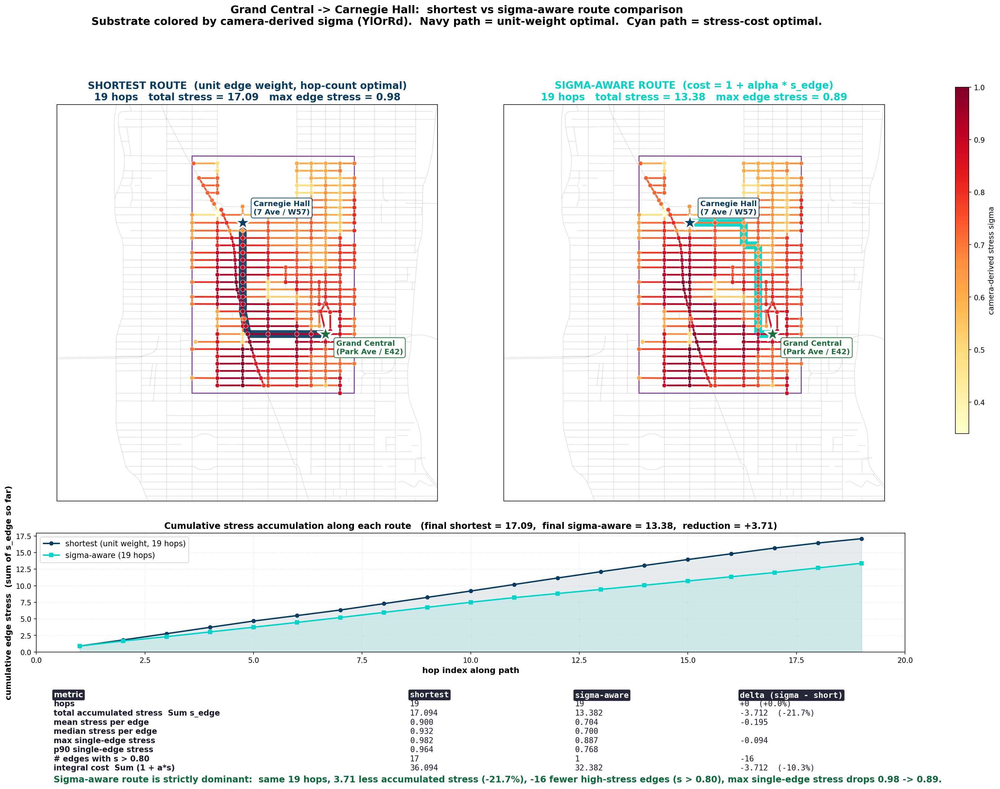
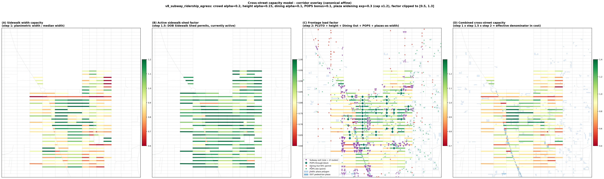

aimezaimez
aimezaimezaimez studies how measured fields on graphs shape route behavior, residual structure, and higher-order organization. In Midtown, the current work asks whether pedestrian stress remains a local route-cost signal or becomes graph structure visible across the corridor.
The current object is a measured graph field. In the Midtown substrate, camera-derived stress values and public capacity layers assign route-cost signals to directed edges and adjacent graph regions. The project asks when those signals stay local and when they become structure visible through route behavior, loop residuals, and basis-stable patterns.
The Midtown pedestrian-routing substrate is the first demonstrated applied instance of this program. It pairs a camera-derived stress field with a seven-layer public-data capacity model and tests how pedestrian stress changes route behavior when route cost is read across corridor-level graph structure rather than distance alone.


The mobility substrate gives the program a concrete measured case. The broader research question is how local measurements become organized structure in systems where behavior depends on a field rather than on isolated parts. In other domains the field may be computational, biological, institutional, or social. The common problem is the same: when does local measurement remain a local signal, and when does it become structure visible in behavior?